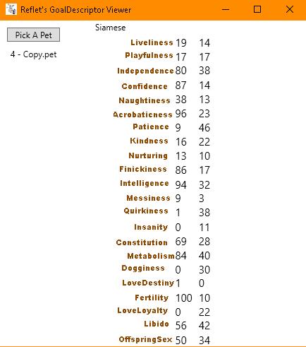
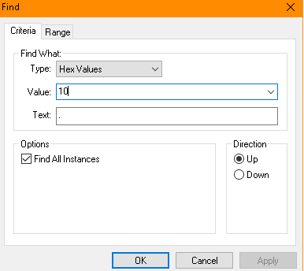
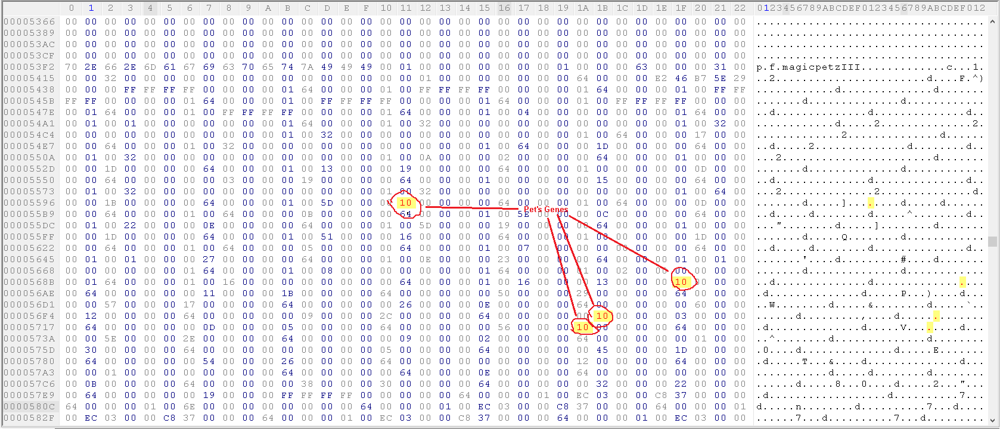
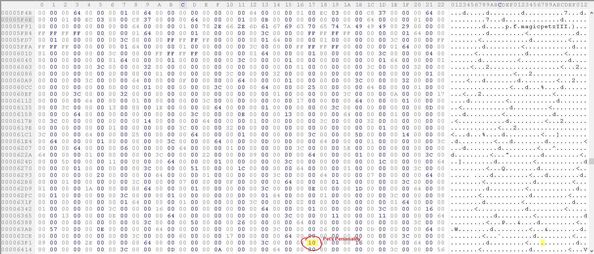
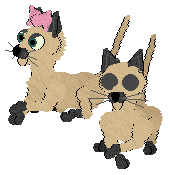
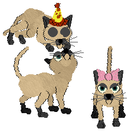

Go back
Something that first needs clarifying: there is a difference between petz personality and personality DNA.
Better tutorials exist showing you how to edit your pet's personality, but this tutorial will revolve mostly around the DNA.
What's the difference? When you edit a pet's personality, the edited trait will not pass down to the pet's offspring.
If you edit the DNA alone, the edited pet will not acquire the edited trait. Only its offspring will.
To make a trait that shows up in the edited pet AND carries on to offspring, you must edit both the personality AND the personality genes.
All this being said, there are better tutorials out there for editing a pet's personality.
In this tutorial I am going to show you my own method for editing personality and DNA. This is a very easy method, but it is not ideal.
How To Do It
All you will need for this is the Goal Descriptor Analyzer and any hex editor.
You will use the analyzer to get the value of the trait you are editing.

I will be editing my meezer's kindness to give him sleepy sickness.
His kindness is 16, but my hex editor doesn't display decimal numbers so I will search for 10.

Near the bottom to end of your petz file, you will see two chunks that look like this:


The chunk on top will often have the word YALP at the top, so you can also find these by searching for YALP.
If it does not like in my example, you can search p.f.magicpetzIII and the genes will be right under the second result.
Between the two lines that say p.f.magicpetzIII are where your pet's DNA is located.
Now this is the tricky part, you need to edit TWO genes for this to work properly!
The two genes likely work as a range because if you only edit one, the offspring will not always have the correct gene.
If you edit the wrong ones, you will be editing something that isn't the genes and this is not good because it can potentially cause other genes to pass down in a strange way.
I get the correct genes by changing a value and breeding my pets after each change. I know I have the correct two bytes when every offspring comes out with the desired gene.
Test breed as much as you can!
After changing all the genes to the value I want, I will now clone my pet and give the clone a sex change using PetzA.

Now we have two completely identical petz with the edited gene.
As said above, neither of them have sleepy sickness. Now let's breed them together.

Aww, their offspring falls asleep in your hand just like a chinchi does!
You can see this for yourself and download the meezers here.
Why This Method Is Bad
There's a few things wrong with this method.
For one, you cannot use it to find any value.
Some values show up very often in a pet's file like 0, 50, or 100.
If you have a pet with a value like this you will not be able to find where the genes are.
The second thing is that finding the correct bytes is tedious.
I used to just change every byte that could potentially be the gene, but I stopped because I don't know if this affects something.
The last thing, you only do this to first-gen petz.
Second-gen petz seem to have different and varying genes from their personality, so you may be unable to find its genes.
How Gene Editing Can Be Easier
To be able to effectively find all the genes in any pet and avoid changing unnecessary values, we need to map out where all the genes are in the hex file.
It may be difficult because when I was attempting to map out a gene I found that it was sometimes in different spots.
I believe that we can figure out how to pinpoint where the genes will always be because I do see patterns in where they fall.
I will eventually do more mapping and post my results in another lab so that we can change any gene on any pet :)